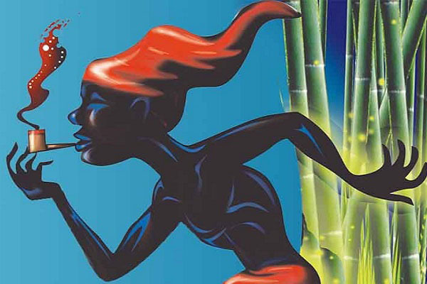

Lenda da Cuca
Ela é uma personagem muito temida pelas crianças, representada por velha feia e malvada com cara de jacaré que raramente dorme. Sua personagem está associada com o rapto de crianças desobedientes e que não querem dormir. Por isso, a tradicional cantiga de ninar crianças diz: “Nana neném que a Cuca vem pegar”.
Lenda do curupira
Personagem travesso do folclore brasileiro, o Curupira é a representação de um menino com cabelos vermelhos e pés virados para trás. A origem do nome é tupi-guarani e significa "corpo de menino". Protetor da fauna e da flora, o Curupira assobia e deixa pegadas com seus pés virados. O objetivo é enganar os exploradores e destruidores da natureza.

Lenda da Iara
Conhecida como Iara ou Uiara, a lenda da mãe d’água é de origem tupi. Iara significa “Senhora das Águas”. Esta personagem é representada por uma sereia belíssima que atrai os pescadores com suas doces canções a fim de matá-los. Antes de ser uma sereia, Iara era uma índia bela e inteligente que despertava muita inveja, inclusive de seus irmãos. Assim, para acabarem com o problema, os irmãos resolvem matá-la. No entanto, é ela que os mata. Como punição, Iara é lançada no encontro do Rio negro e solimões e, a partir daí, torna-se uma sereia com objetivo de matar os homens.
Lenda do Saci-Perêrê
É representada por um menino negro que possui uma perna só. Além disso, fuma cachimbo e usa uma carapuça vermelha que lhe dá poderes mágicos. Muito brincalhão e travesso, o Saci surge como um redemoinho e gosta de assustar pessoas. Embora o Saci-pererê seja o mais conhecido, existem três tipos de saci: O Pererê, o Trique e o Saçurá.
Lenda do Boto-cor-de-rosa
A lenda do Boto é originária da região amazônica sendo também conhecida pela denominação "boto cor-de-rosa" ou "Uauiará". Reza a lenda que nas noites de Festas Juninas, o boto, animal dos rios da Amazônia, sai dos rios e transforma-se num homem muito atraente. Seu objetivo é atrair e seduzir as mulheres para levá-las ao fundo dos rios e acasalar. Por este motivo, a cultura amazônica costuma afirmar que o boto é o pai de todos os filhos de origem desconhecida.

Outros personagens:
| # | Nome | Origem | Região |
|---|---|---|---|
| 1 | Mula sem cabeça | Ìndigena | Sul |
| 2 | Caipora | Ìndigena | Norte |
| 3 | Corpo-Seco | Ìndigena | Norte |
| 4 | Quibongo | Ìndigena | Norte |
| 5 | Mapinguari | Ìndigena | Sudeste |
| 6 | Negrinho do pastoreiro | Ìndigena | Nordeste |
| 7 | Cobra grande | Ìndigena | Sul |
| 8 | Boi Tátá | Ìndigena | Centro-Oeste |
| 9 | Lobisomem | Ìndigena | Centro-Oeste |
| 10 | Bradador | Ìndigena | Sudeste |